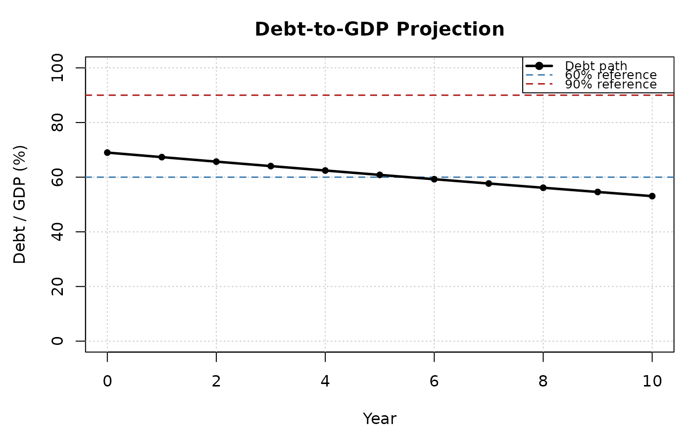

Projects a debt-to-GDP ratio forward using the standard debt dynamics equation:
Usage
dk_project(
debt,
interest_rate,
gdp_growth,
primary_balance,
sfa = 0,
horizon = 10,
date = NULL
)Arguments
- debt
Numeric scalar. Initial debt-to-GDP ratio (e.g.,
0.90for 90 per cent of GDP).- interest_rate
Numeric scalar or vector of length
horizon. Nominal effective interest rate on government debt.- gdp_growth
Numeric scalar or vector of length
horizon. Nominal GDP growth rate.- primary_balance
Numeric scalar or vector of length
horizon. Primary balance as a share of GDP. Positive values denote a surplus; negative values a deficit.- sfa
Numeric scalar or vector of length
horizon. Stock-flow adjustment as a share of GDP. Default0.- horizon
Integer scalar. Number of years to project forward. Default
10.- date
Optional
Date. If supplied, the projection is anchored to this date (stored in the output for labelling purposes).
Value
An S3 object of class dk_projection containing:
- debt_path
Numeric vector of length
horizon + 1, giving the debt-to-GDP ratio from the initial period through the terminal period.- decomposition
A
data.framewith columnsyear,debt,interest_effect,growth_effect,snowball_effect,primary_balance_effect,sfa_effect, andchange.- horizon
The projection horizon.
- inputs
A list storing all input parameters.
Details
$$d_{t+1} = \frac{1 + r_t}{1 + g_t} d_t - pb_t + sfa_t$$
where \(d\) is the debt-to-GDP ratio, \(r\) is the effective nominal interest rate on government debt, \(g\) is nominal GDP growth, \(pb\) is the primary balance as a share of GDP (positive = surplus), and \(sfa\) captures stock-flow adjustments (e.g. privatisation receipts, exchange-rate valuation changes, below-the-line operations).
References
Blanchard, O.J. (1990). Suggestions for a New Set of Fiscal Indicators. OECD Economics Department Working Papers, No. 79. doi:10.1787/budget-v2-art12-en
International Monetary Fund (2013). Staff Guidance Note for Public Debt Sustainability Analysis in Market-Access Countries. IMF Policy Paper.
Examples
d <- dk_sample_data()
proj <- dk_project(
debt = tail(d$debt, 1),
interest_rate = 0.03,
gdp_growth = 0.04,
primary_balance = 0.01
)
proj
#>
#> ── Debt Sustainability Projection ──────────────────────────────────────────────
#> • Horizon: 10 years
#> • Initial debt/GDP: 69%
#> • Terminal debt/GDP: 53.1%
#> • Change: -15.9 pp
#> • Debt-stabilising primary balance: -0.5%
plot(proj)
